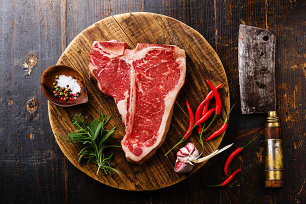
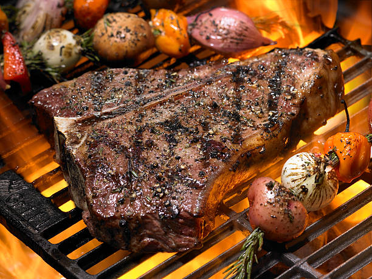
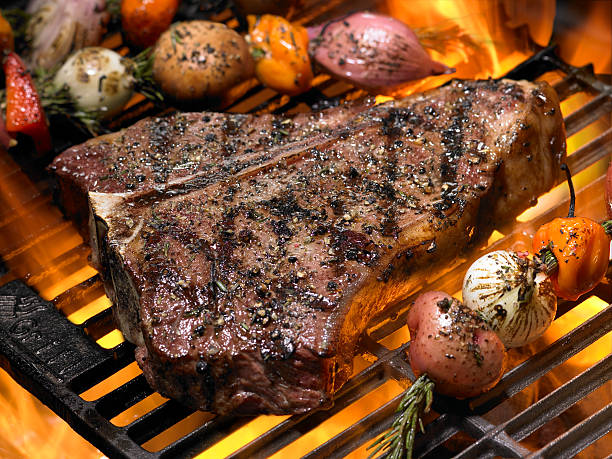

📍 [Checkout de Presença] Módulo 1 - Pensamento Computacional: alguns conceitos
Nome completo: Diego Serafim de Sousa
Nome do/a Professor/a Tutor/a: Anderson Corrêa
Título da atividade: Os quatro pilares do pensamento computacional
Vencimento: segunda, 13 mar 2023, 23:59 | Vencimento: terça, 8 ago 2023, 23:59
Essa atividade vale presença
Como vimos no Módulo 1, o Pensamento Computacional possui quatro grandes pilares:
1. Reconhecimento de Padrões;
2. Decomposição;
3. Abstração;
4. Algoritmo.
- Para exercitar cada um dos quatro pilares do pensamento computacional, o desafio desta atividade está relacionado à resolução do seguinte problema hipotético:
"Suponha que você seja um/a churrasqueiro/a iniciante, mas que foi convocado/a pela família para ser o/a responsável por assar bifes T-Bones em um churrasco de uma festa de aniversário de domingo. No entanto, você desconhece o que são bifes T-bones e desconhece a forma de tratamento da carne para assar, mas para ser agradável com todos, aceitou o convite!”
Etapa 1
O Pilar denominado Reconhecimento de Padrões busca encontrar similaridades e padrões com o intuito de resolver problemas complexos de forma mais eficiente. Para isso, procura-se por elementos que sejam iguais ou muito similares em cada problema. Considerando que você é um/a churrasqueiro/a iniciante e desconhece o que é um bife T-Bone, para esta tarefa faça:
a) Em um documento de texto faça a colagem de três imagens públicas de T-Bones que você encontrar na internet;

 

b) Em seguida, observando as fotos, descreva quais são as principais características, ou seja, quais são os padrões que configuram a imagem de um bife T-Bone. Você também pode pesquisar essa descrição na internet.
- Consiste em dois cortes de carne em um único osso em forma de "T". Esses cortes são o contrafilé (striploin) de um lado e o filé mignon do outro lado do osso.
- Osso em forma de "T"
- Contrafilé (striploin)
- Filé mignon
- Gordura marmorizada
- Espessura uniforme
Observação: Com a descrição das características, dos padrões, nós podemos criar em nossa memória como são bifes T-Bones e em um próximo churrasco você conseguirá ir ao mercado e reconhecer esse tipo de Bife mais rapidamente para comprar ou poderá ajudar alguém descrevendo-os como eles são.
Etapa 2
O Pilar denominado Abstração analisa elementos que têm relevância para o problema, diferenciando-os daqueles que podem ser deixados de lado. Suponha que no dia anterior ao churrasco o aniversariante te ligou e descreveu a seguinte situação: "Amanhã o churrasco será na churrasqueira da parte interna da casa, pode ser que chova muito pela manhã e que pela tarde faça sol. Para as pessoas que não comem carne compramos sopa de legumes. Na festa cada um trará sua bebida. Não esqueça que temos 30 pessoas e que cada uma pode comer 300 gramas de carne, então compre a quantidade de carne suficiente. Para cada 5 (cinco) quilos de carne compre um pacote de carvão. Após o churrasco iremos comemorar com bolos e doces, uma banda também foi contratada".
Considerando o pilar de Abstração, para a tarefa de realizar o churrasco, que informações repassadas pelo aniversariante podem ser deixadas de lado (são irrelevantes para o problema)?
- Churrasco será na churrasqueira.
- Parte interna da casa.
- Pode ser que chova muito pela manhã e que pela tarde faça sol.
- Pessoas que não comem carne.
- Compramos sopa de legumes.
- Cada um trará sua bebida.
- Bolos e doces, uma banda também foi contratada.
Observação: Por meio das abstrações podemos manter o foco apenas nos elementos ou nas tarefas principais que nos ajudaram a resolver o problema. Faça uma análise da situação descrita e cite quais são as informações desnecessárias e quais são as necessárias para a solução do problema.
Informações Desnecessárias | Informações Necessárias
- Churrasco na churrasqueira. | - 30 pessoas
- Parte interna da casa. | - Dada uma pode comer 300 gramas de carne
- Chuva pela manhã e a tarde sol. | - Para cada 5 quilos de carne um pacote de carvão
- Pessoas que não comem carne. | - Amanhã o churrasco
- Compramos sopa de legumes.
- Cada um trará sua bebida.
- Bolos e doces, uma banda também.
Etapa 3
O pilar denominado Decomposição corresponde à habilidade de dividir um problema complexo em partes menores. Trabalhar um fragmento do problema por vez facilita a solução desse problema complexo (maior), permitindo ainda maior atenção a cada etapa.
Nesta etapa, sem se preocupar com a solução do problema maior (assar o churrasco de T-bones), descreva problemas menores que você acredita que já poderiam ser resolvidos no dia anterior ou em algumas horas antes do início do churrasco.
- Oganizar material para o preparo do churrasco como:
- Temperos.
- Louças.
- Limpeza da churrasqueira.
Você pode pesquisar na internet quais são os processos envolvidos na preparação dos bifes de T-bone antes de assá-los.
- Temperar os bifes.
- Pré-aquecer a grelha.
- Selar os bifes.
Descreva no mesmo documento os problemas menores que você consegue visualizar.
- Bifes muito grossos.
- Supercozinhar os bifes.
- Não pré-aquecer adequadamente.
Observação: Por meio da decomposição, podemos resolver os problemas menores que compõem o problema maior (assar o churrasco), desta forma podemos agilizar ao máximo o processo para facilitar a execução do problema maior.
Etapa 4
O pilar denominado Algoritmo consiste da habilidade de montar uma sequência lógica para resolver um problema. Normalmente, em nosso dia a dia, quando vamos realizar uma determinada tarefa, já temos uma sequência lógica de como realizar determinada função, mas muitas vezes isso acaba sendo feito de uma forma automática, que acabamos por não percebê-la.
Retornando ao problema de assar um grande churrasco de T-bones, descreva agora, em passos objetivos e detalhados, como seria o algoritmo para assar o churrasco.
- Preparação (Temperar os bifes, sal, pimenta, etc.).
- Acender a churrasqueira.
- Limpar a grelha.
- Untar a Grelha.
- Acender o fogo no carvão.
- Aquecer a grelha no fogo por uns minutos.
- Colocar os bifes para assar por alguns minutos.
- Registra ou cronometrar para não assar muito.
- Descansar antes de servir por 5 minutos.
- Servir.
Você pode pesquisar na internet quais são os processos envolvidos na preparação do churrasco dos bifes de T-bone antes de assá-los. Insira os passos no mesmo documento.
A construção do algoritmo é a nossa última etapa, com a descrição do algoritmo “Assar churrasco de T-bones”, você agora tem a capacidade de reproduzir o processo em outros momentos e mesmo sem notar trabalhou com os quatro pilares do pensamento computacional para realizar a tarefa.